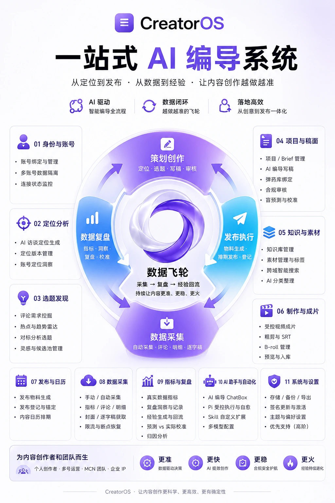

销售原版产品，双方各分 50%
你可以销售 CreatorOS。成交后，你与原作者按五五分成。
50%你的销售分成比例
以 599 元的产品为例，你分得 299.50 元，原作者分得 299.50 元。
适合希望把产品推荐给客户、学员或合作伙伴的人。购买后按交付指引对接分销。
从账号定位、选题和脚本，到小红书图文、公众号文章、视频制作与数据复盘，CreatorOS 把创作放进同一个本机工作台。
真实产品界面 · 数据本机优先 · 按需选择官方或自配模型
飞轮成立的最小单位不是「一次 AI 生成」,而是一条作品走完整条链——有定位、有锁定预测、有真实指标、有完成复盘、有回流经验。每一步都是产品里的独立工作面。
飞轮,不是清单。
一圈比一圈准。
别人做完就忘,每条从零。CreatorOS 让复盘沉淀成定位,定位长出选题,经验回流再喂下一条——转起来之后,内容不是一条条孤立地做,而是一台越跑越准的机器。
↓ 下面把这一圈的每一步拆开看

账号「是谁、给谁、凭什么」的结构化定义。它是下游选题、写稿、评分、素材匹配的硬约束源——不先定好,后面全跑偏。

不对着空白发呆。AI 选题会依据定位、观众评论、知识库、行业热点四种真实信号出题,择优才立项。

脚本工作面:备料 → 立论点 → 写口播稿 → 合规审核 → 锁定盲预测。先有素材与论点,写出来的稿才有据可依。

把脚本做成成片,或跳过制作只走流程。两条路都行,不绑架你的剪辑习惯。

发布采到数据后,把发布前的盲预测和真实数据放一起对照,校准飞轮,沉淀可复用经验。

复盘沉淀的经验回流到定位与知识库。把素材、金句、逐字稿、观众评论蒸馏成「知识原子」,供下一轮选题与写稿调用——飞轮再转一圈。

大多数工具止步于「生成一段文案」。CreatorOS 是一条会自我校准的生产线——六件事,决定了它越用越准。
发布前锁定一份盲预测,发布后与真实数据对照,形成校准——不是拍脑袋,是有据可查。
自动采集完播、封面点击率、跳出等真实指标;数据不足时如实显示空态与 0,坚持不编假数据。
复盘沉淀的可复用经验回流到定位,下一条选题与写稿更准——内容不再每条从零。
项目、定位、素材、模型 Key 全在本机加密落盘,不上云;Key 只写不回,不出现在日志与响应里。
AI 只产候选与建议,你确认才落库,绝不替你瞎改——把判断权留在你手里。
一号一套定位 / 数据 / 经验,切号即切整个工作区,一人管多号也不会串。
从短视频、图文到长文章，按平台准备内容，把账号、作品与运营经验留在同一个工作台。
各平台可用的发布、采集功能，以客户端中的账号连接状态为准。
以下两项权益仅限购买 599 元永久版，月卡不包含。永久版可用于日常创作，也包含分销资格与核心客户端源码共创。
你可以销售 CreatorOS。成交后，你与原作者按五五分成。
以 599 元的产品为例，你分得 299.50 元，原作者分得 299.50 元。
适合希望把产品推荐给客户、学员或合作伙伴的人。购买后按交付指引对接分销。
原作者会与你共享 GitHub 核心客户端代码仓库。你可以基于源码二次开发，做出自己的产品，并自行定价销售。
当前每售出一份，向原作者结算 299.50 元（599 元 × 50%）。你卖 499 元或 999 元，结算基准相同。
源码范围：仅核心客户端部分，不包含授权与签名部分。后续如调整官方基准价，结算标准另行说明。
买现成工具来用，或把它做成自己的产品。先选适合你的方式。
查看套餐与购买方式CreatorOS 解决的不是"会做内容的人更快",而是让凭感觉发、发完就忘的人,拥有一条有依据、能复盘的生产线。
用定位中心 + AI 访谈建立定位母版,让选题、写稿、评分全部有约束源——不再东一榔头西一棒子。
从评论、对标、热点、知识库四种真实信号出题,候选带四维评分。每天的选题从"憋不出"变成"挑一条改"。
盲预测 + 真实数据复盘 + 经验回流,把每条作品的经验沉进定位,让下一条比上一条更有依据。
这14张截图来自实际使用中的 CreatorOS。查看账号定位、内容雷达、AI脚本、小红书图文画布、素材管理、发布日历与多平台运营分析；点击图片可放大。

查看继续创作、近期发布和账号上手引导。

按平台与日期查看已采集作品、播放表现和账号数据。
从经验、优势和创作目标出发，逐步整理账号定位。

在真实来源中筛选内容、查看互动数据，并升级为创作项目。
基于定位、评论问题、知识资料与热点补充选题。

按创作阶段查看项目与已发布作品，继续进入对应稿件。
脚本、文章、图文、视频制作和复盘共享项目资料与编导上下文。
真实资料库初始界面：添加资料后阅读原文，持续积累创作依据。

集中管理作品封面和素材，支持预览、检索与项目复用。
从封面与图文案例出发，选择适合内容的视觉表达。

按日历管理创作安排、发布记录与平台表现。
按真实作品与选定周期查看表现，结合内容生成运营分析。

查看各平台账号采集计划、执行时间与运行状态。

按文本、图片、视频和语音用途查看与选择模型来源。
从 v1.2.0 到 v1.3.0，持续完善多平台创作与运营。在这里查看每个版本的主要变化。
把抖音、小红书、视频号、B站、快手、YouTube 与公众号的内容创作与运营，放到同一个本机工作台。文章、图文、视频各有工作面，账号、作品与复盘相互衔接。
v1.2.0 围绕运营分析、内容雷达、采集计划和日常响应持续改进，完善 macOS 与 Windows 的使用体验。
本轮围绕素材生成、分镜、剪辑、发布和双端稳定性收拢体验，让一条内容从输入到交付更连贯、更可复用。
CreatorOS v1.0 把创作主线、桌面交付和长期经营能力收拢到同一套本机工作台，正式支持 macOS 与 Windows。
第二轮迭代打通从前采到复盘的主链路，让定位、选题、改写、排期和复盘真正接在一起。
这一轮把采集、创作、长任务和反馈整理成可恢复的工作流，减少“看起来完成、实际无法继续”的断点。
建立“定位—选题—脚本—制作—发布—复盘—经验回流”的核心产品骨架，并首次接通官网远程版本公告。
CreatorOS面向自媒体创作者、内容团队和多账号运营者，把账号定位、选题、写稿、图片素材、视频制作、发布管理与数据复盘放在同一个本机工作台。
支持面向抖音、小红书、视频号、快手、B站、YouTube和公众号组织创作与发布管理；具体发布、采集功能以客户端中的账号连接状态为准。
可以。图文和文章有各自的创作工作面，小红书图文可组织正文、逐页配图与封面，公众号文章可处理长文、配图和排版，并复用项目资料与素材。
不需要。你可以先描述经验、优势和目标，生成账号定位候选，确认采纳后继续选题与创作。
CreatorOS提供macOS与Windows桌面端。安装系统要求与当前可用安装包请查看购买页中的下载说明。
购买599元永久版后可获得分销资格，月卡不包含。你可以销售CreatorOS，成交后与原作者五五分成。以599元的产品为例，双方各分299.50元。
购买599元永久版包含源码共创，月卡不包含。共享GitHub核心客户端代码仓库，你可以二次开发并自行定价销售；授权与签名部分不包含在内。当前每售出一份二开产品，向原作者按599元×50%结算，即299.50元；后续基准价调整另行说明。
CreatorOS v1.3.0 支持 macOS 与 Windows，把定位、选题、写稿、制作、发布与复盘收进同一个本机工作区。